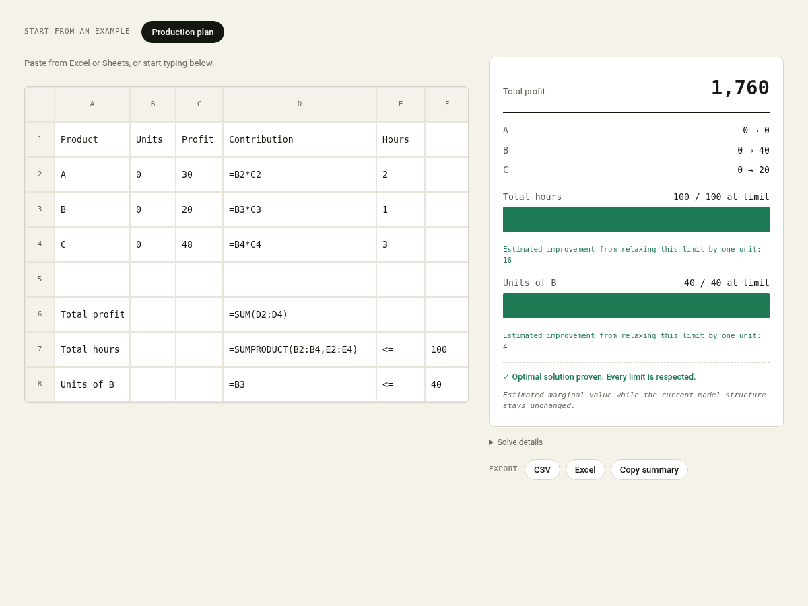
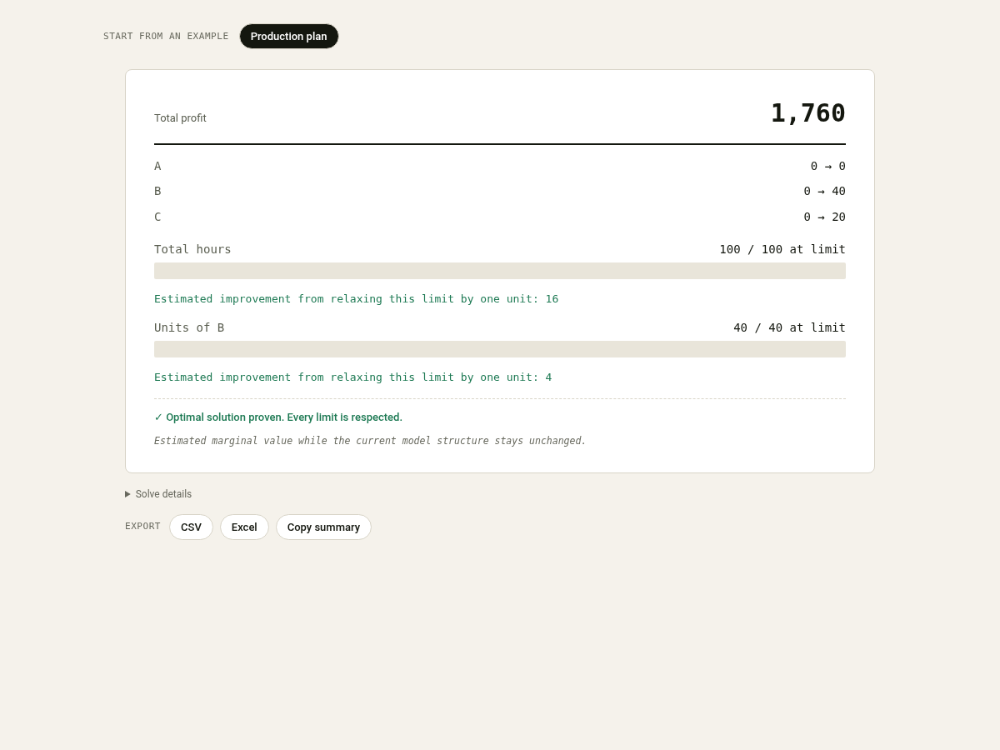

Optimisation you can verify
Find the best answer. Then see it checked.
Paste a model from Excel or Google Sheets, or build one in the grid. Plumline finds the best allocation it can prove, and checks it against your own formulas.

How it works
Four steps from spreadsheet to a checked answer
Paste
Paste your table or build it in the grid.
Confirm
Plumline shows the objective, decisions and limits it read.
Solve
It finds the best allocation it can prove.
Check
It recalculates the result against your formulas.
Real problems
Decisions people bring to Plumline
Production planning
Choose how much of each product to make for the most profit within your limits.
Workforce scheduling
Cover every shift with the fewest people while meeting each rule.
Supplier activation
Decide which suppliers to open so demand is met at the lowest total cost.
Delivery loading
Pack orders into vehicles without passing weight or space limits.
Budget allocation
Split a budget across channels for the best return within each cap.
Project selection
Pick the set of projects with the most value that still fits the budget.
How it verifies
Every answer comes with its proof
What Plumline understood
Before solving, it shows the objective, decisions and constraints it read from your sheet, so a misread cell surfaces early.
Objective checked again
It substitutes the solution back into your objective formula and confirms the value it reports.
Constraints checked again
It recalculates every constraint from your formulas and confirms the result stays within them.
A proven status
It reports whether the answer is optimal, feasible, incomplete, infeasible or unbounded, in plain words.
For eligible continuous models, Plumline estimates how the result may change when a binding constraint is relaxed by one unit. This sensitivity insight is often called a shadow price.

Worked examples
Open a real model and solve it
Each one loads a complete model with a known result you can verify yourself.
What it handles
What Plumline can solve now.
Plumline solves linear models where the goal and every limit are weighted sums of your decisions. It supports three variable types (continuous, integer and binary) as well as mixed-integer models that combine them, and it checks the answer against your own numbers whichever you use.
Models you can solve
- Continuous models
- Integer models
- Binary decisions
- Mixed-integer models
Works with your spreadsheet
- Number or formula limits
- Paste from Excel or Google Sheets
- Export the result
Checks built into every result
- Objective checked again
- Constraints checked again
- Solved in your browser
Understand the answer
- See what Plumline understood
- Marginal impact
- Feasible region chart
- Five interface languages
Privacy
Your data stays on your device
The online solver reads and solves your model in the browser. Nothing is uploaded, no account is needed, and closing the tab clears it.
Honest limits
What Plumline does and does not do
It solves linear models
Continuous, integer, binary and mixed models where the objective and constraints are linear.
It fits spreadsheet-sized problems
It is built for the models you keep in a sheet, not for very large industrial instances.
It refuses what it cannot prove
Non-linear terms and strict inequalities are rejected rather than processed incorrectly.
Google Sheets add-on
It reads the model straight from the sheet you already built, solves it, and writes the answer back so Sheets can check it. Free.
The Google Sheets add-on is currently in review.
Questions
Before you try it.
Do I need to install anything?
For the online solver, no. It runs in your browser at plumline.online. A Google Sheets add-on is on the way and will be a free, one-time install from the Workspace Marketplace once it's approved.
How do I write the model?
With ordinary spreadsheet formulas. Put your options in rows, a cell that totals what you care about (the goal), and any limits as rows with an operator and a number. Plumline reads it from there, no special syntax.
What kinds of problems does it solve?
Continuous, integer, binary and mixed-integer linear problems: production, purchasing, blending, staffing, transport, budget allocation, project selection and knapsack-style loading. It does not solve genuinely non-linear ones, such as a quantity multiplied by another quantity, and points you to the cell causing the problem.
Can I set variable types and limits?
Yes. Variable settings lets you mark each decision as continuous, integer or binary (0 or 1) and give it a minimum and maximum. Plumline verifies those limits hold in the final answer and shows the check.
Are my numbers safe?
Yes. The online solver runs entirely in your browser and uploads nothing. The add-on sends no spreadsheet data to Plumline or third parties; its processing takes place within Google's infrastructure under your own account. There is no Plumline account to create and no tracking.
How much does it cost?
The online solver is free. The Google Sheets add-on is planned to be free once it becomes available.
Put a number in front of your next decision.
Free. The online solver runs in your browser and uploads nothing.